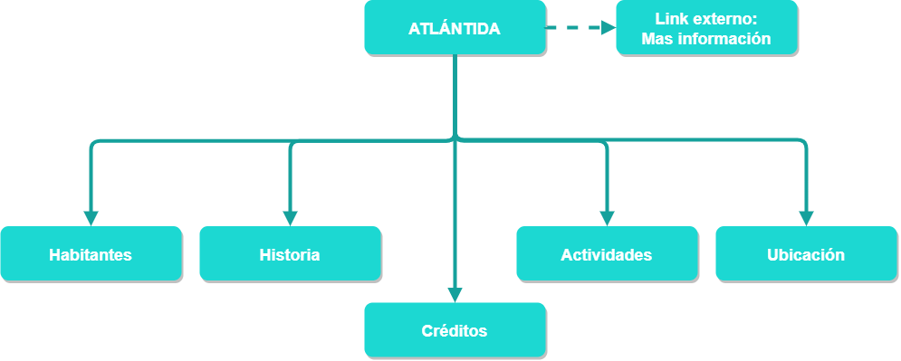

Atlántida
Ubicación
Habitantes
Actividades
Historia
Autor
Autor:
Camilo José Sepúlveda Zúñiga -
csepulvedaz@unal.edu.co
Créditos de imagen
Ubicación Atlantida:
https://gcdn.emol.cl/mitos-y-enigmas/files/2016/12/atlantida2.jpg
Ilustración ciudad 1:
https://academiaplay.es/wp-content/uploads/2017/10/atlantida01.jpg
Ilustración ciudad 2:
https://gcdn.emol.cl/mitos-y-enigmas/files/2016/12/atlantida3.jpg
Ilustración ciudad bajo el agua:
https://www.microplagio.com/imgs/2007/09/atlantis1.jpg
Ilustración caida Atlántida 1:
https://www.nauticalnewstoday.com/wp-content/uploads/2015/11/la-atlantida-3-1068x601.jpg
Ilustración caida Atlántida 2:
https://www.quo.es/wp-content/uploads/2019/10/donde-esta-la-atlantida-950x640.jpg
Gif caida Atlántida:
https://giphy.com/gifs/atlantis-dFTJBteiD5kje
Imagen de fondo:
https://www.freepik.com/premium-vector/water-surface-with-ripple-seamless-pattern-flat-background-from-top-view_5783582.htm
Referencias bibliográficas
https://academiaplay.es/el-gran-misterio-atlantida/
https://es.wikipedia.org/wiki/Atl%C3%A1ntida
https://historiaybiografias.com/atlantidad_ubicacion/
https://www.microplagio.com/imgs/2007/09/atlantis1.jpg
https://www.guioteca.com/mitos-y-enigmas/la-atlantida-el-mitico-continente-perdido-existio-en-realidad/
https://culturacientifica.com/2014/01/13/lo-que-nos-ensenan-los-atlantes/
https://www.muyhistoria.es/h-antigua/fotos/datos-y-curiosidades-sobre-la-atlantida
https://www.quo.es/ser-humano/a20814/donde-esta-la-atlantida/
https://www.microplagio.com/articulos/la-atlantida-la-civilizacion-perdida//
Fuente tipográfica
Fuente usada:
Open Sans -
https://fonts.google.com/specimen/Open+Sans
Mapa sitio

Créditos